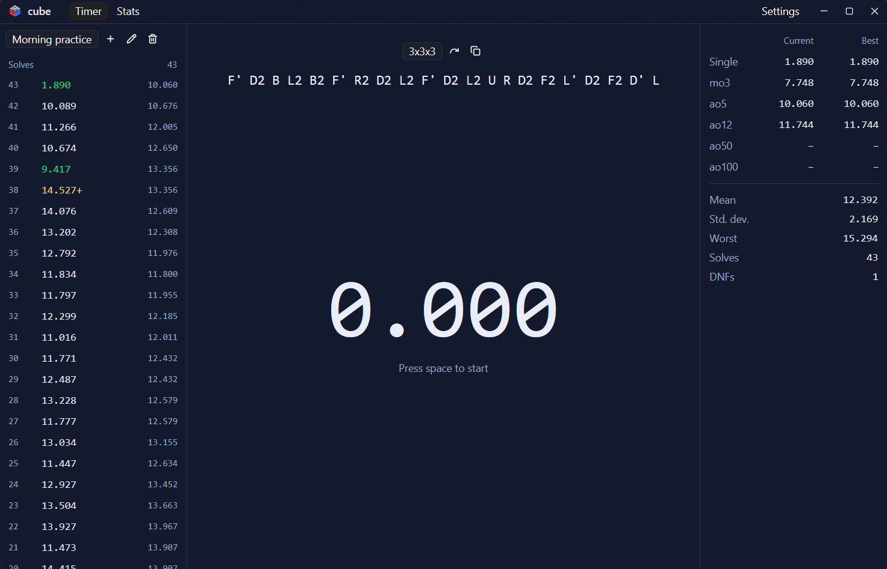

A speedcubing timer for your desktop.
Time your solves with WCA inspection and official scrambles, then see how you're improving. Your history is shared with cube-tui, so nothing needs importing.

- Inspection that keeps scoreGoing over applies +2 or DNF for you, following WCA rules.
- Official scramblesRandom-state scrambles for 12 events, generated by tnoodle-rs.
- Every average you trackCurrent and best single, mo3, ao5, ao12, ao50 and ao100.
- Charts of your progressFollow your times and averages, see your solves per day, compare sessions and check your all-time bests.
- Edits you can trustChange a solve and its history is kept alongside it.
- Your data stays localSolves live in one file on your computer.